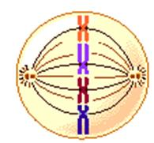
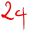

Đề 1
PHẦN TRẮC
NGHIỆM (7.0 điểm )
Câu
1: Phát biểu sau đây có nội dung
đúng là
A. trong quang hợp, cây hấp thụ
O2 để tổng hợp chất
hữu cơ
B. quang hợp là
sử dụng ánh
sáng để phân giải chất hữu cơ
C.
một trong các sản
phẩm của quang hợp
là khí O2
D.
nguyên liệu của quang hợp là H2O
và O2
Câu
2: . Quá trình đường phân xảy ra ở
A. trên màng của tế
bào C.
trong tất cả các bào quan
khác nhau B. trong tế bào chất (bào tương) D. trong nhân của tế bào
Câu 3: Hoạt động sau
đây không xảy ra trong pha
sáng của quang hợp là
A. diệp lục hấp thụ năng lượng ánh sáng C. cacbon hidrat được tạo ra
B. nước được phân li và giải phóng điện tử D.
hình thành ATP
Câu 4: Pha sáng của quang hợp diễn ra
ở
A. trong các
túi dẹp ( tilacôit) của
các hạt grana C. ở
màng ngoài của lục lạp
B. trong các nền lục lạp D. ở màng trong
của lục lạp
Câu 5: Thứ tự nào sau
đây được sắp
xếp đúng với trình tự phân
chia nhân trong nguyên phân ?
A. Kỳ đầu , kỳ
sau , kỳ cuối , kỳ giữa C. Kỳ đầu , kỳ giữa , kỳ sau , kỳ cuối B. Kỳ
sau ,kỳ giữa ,Kỳ
đầu , kỳ cuối D. Kỳ giữa , kỳ sau , kỳ đầu
, kỳ cuối
Câu 6: Thứ tự
lần lượt
trước - sau của
tiến trình 3 pha ở kỳ trung
gian trong một chu kỳ
tế bào là
A. G2,G2,S B. S,G1,G2 C.
S,G2,G1 D. G1,S,G2
Câu 7: Diễn biến nào
sau đây đúng trong nguyên phân
?
A. Tế bào phân chia trước rồi
đên nhân phân chia
B. Nhân phân chia
trước rồi
mới phân chia tế
bào chất
C. Nhân và tế
bào phân chia cùng lúc
D. Chỉ có
nhân phân chia
còn tế bào chất thì không
Câu 8: .
Sự tiếp hợp va ftrao đổi chéo
nhiễm sắc thể
diễn ra ở kỳ nào trong giảm phân ?
A. Kỳ đầu
I B. Kỳ giữa I C.
Kỳ đầu II D. Kỳ giữa II
Câu 9: . Giảm phân
là hình thức phân bào xảy ra
ở loại tế bào
nào sau đây?
A. Tế bào sinh dưỡng B.
Giao tử C. Tế
bào sinh dục chín D. Tế bào
xô ma
Câu 10: Các nhiễm sắc
thể kép xếp trên mặt
phẳng xích đạo của
thoi phân bào thành mấy hàng ?
A. Một hàng
B. Ba hàng C. Hai hàng D. Bốn
hàng
Câu 11: Đặc
điểm cấu tạo tế bào của vi
khuẩn?
A. Có nhân điển
hình C. Không có màng nhân
B. Không có nhân D. Có bộ máy phân bào
Câu 12: Hình thức
dinh dưỡng bằng nguồn cac bon chủ yếu là
CO2, và năng lượng của
ánh sáng được gọi là:
A. Hoá tự dưỡng B. Quang tự dưỡng C. Hoá dị dưỡng
D.
Quang dị dưỡng
Câu 13: Quá trình oxi hoá các chất hữu cơ mà chất nhận điện tử
cuối cùng là ôxi phân tử , được gọi
là :
A. Lên men B. Hô hấp hiếu khí C. Hô hấp D.
Hô hấp kị khí
Câu 14: Trong quá trình
tổng hợp các chất ở vi sinh vật,
đơn phân nào sau đây tổng hợp nên phân tử
protein?
A. Axitamin. B.
Glucôzơ. C. axit béo. D. Nuclêôtit.
Câu 15: Trong quá trình
tổng hợp các chất ở vi sinh vật,
đơn phân nào sau đây tổng hợp nên phân tử polisaccarit?
A. Axitamin. B.
Glucôzơ. C. axit béo. D. Nuclêôtit.
Câu 16: Trong quá trình phân giải các chất ở vi sinh vật, enzim nào sau đây được
sử dụng để phân giải protein thành các axit amin?
A.
Nuclêaza. B. Amilaza. C.
Lipaza. D. Prôtêaza.
Câu 17: Cho một
phương trình tổng
quát sau đây :
C6H12O6 + 6O2 →
6CO2 + 6H2O + năng lượng
Phương trình trên
biểu thị quá trình
phân giải hàon toàn của 1 phân tử chất
A. Disaccarit B. Glucôzơ C. Prôtêin D.
Pôlisaccarit
Câu 18: Sơ đồ
tóm tắt nào sau
đây thể hiện đúng
quá trình đường phân
A. Glocôzơ
→ axit piruvic +
năng lượng
B. Glocôzơ → CO2+ năng lượng
C. Glocôzơ
→ Nước +
năng lượng
D. Glocôzơ
→ CO2+ nước
Câu 19:
Ở tế bào nhân thực, pha sáng của
quang hợp diễn ra ở vị trí nào sau đây?
A. Màng tilacoit. B. Chất nền của lục
lạp. C. Chất nền của ti thể. D.
Tế bào chất.
Câu 20:
Trong quang hợp, quá trình chuyển hóa quang năng thành hóa
năng trong các liên kết ATP và NADH diễn ra ở giai
đoạn nào sau đây?
A. Pha tối. B. Pha sáng. C. Chu trình Canvin. D. Cố định CO2.
Câu 21: Trong kỳ đầu của
nguyên nhân , nhiễm sắc thể có hoạt động nào sau
đây ?
A. Tự nhân
đôi tạo nhiễm sắc thể kép C. Bắt đầu co xoắn
lại
B. Co xoắn tối đa D. Bắt đầu dãn
xoắn
Câu 22: Đối với
cơ thể đơn bào, nguyên phân có ý nghĩa gì sau
đây?
A. Tái sinh
cơ quan bị tổn thương. C. Giúp cơ thể sinh trưởng và phát triển.
B.
Tăng số lượng tế bào trong cơ thể. D. Giúp cơ thể sinh sản.
Câu 23: Trong giảm phân, nhiễm sắc thể tự nhân đôi vào
A. Kỳ giữa
I C. Kỳ
trung gian trước lần phân bào I
B. Kỳ giữa II D. Kỳ
trung gian trước lần phân bào
II
Câu 24: Vào kỳ đầu của quá trình giảm phân I xảy ra hiện tượng nào sau đây ?
A. Các nhiễm sắc thể kép bắt đầu co xoắn C. Màng nhân trở nên
rõ rệt hơn
B. Thoi vô sắc đã được hình thành hoàn chỉnh D. Các
nhiễm sắc thể tự nhân đôi
Câu 25: Quá trình phân giải chất hữu cơ mà chính
những phân tửu hữu
cơ đó vừa là chất
cho vừa là chất nhận điện tử ; không có sự tham gia
của chất nhận
điện tử từ
bên ngoài được gọi là
A. Hô hấp hiếu khí B. Đồng hoá C. Hô hấp kị khí D. Lên men
Câu 26: Trong hô hấp
kị khí , chất nhận điện tử cuối cùng là :
A. Ôxi phân tử C. Một chất vô cơ như NO2, CO2
B. Một chất hữu
cơ D. Một phân tử cacbonhidrat
Câu 27: Quá trình lên men rượu có sự tham gia của loại
vi sinh vật nào sau đây?
A. Nấm men. B. Vi khuẩn lam. C.
Vi khuẩn lactic. D. Nấm sợi.
Câu 28: Sản phẩm nào sau
đây được tạo ra từ
quá trình lên men lactic?
A. Axit glutamic B.
Pôlisaccarit C. Sữa chua D. Đisaccarit
PHẦN TỰ LUẬN ( 3 điểm)
Câu 1: ( 1,0
điểm)
Phân biệt giảm phân I và giảm
phân II theo tiêu chí sau
|
|
Giảm
phân I |
Giảm
phân II |
|
Kì
đầu |
Xảy ra
tiếp hợp dẫn đến trao đổi
đoạn giữa các NST kép trong cặp tương
đồng. -Tơ vô sắc
đính 1 bên NST tại tâm động |
-Không xảy ra
tiếp hợp giữa các NST kép trong cặp tương
đồng. -Tơ vô sắc
đính 2 bên NST tại tâm động |
|
Kì
giữa |
- Các NST kép dàn 2
hàng (đối diện) trên mặt phẳng xích
đạo TB |
- Các NST kép dàn
thành 1 hàng trên mặt phẳng xích đạo tế
bào |
|
Kì sau |
- Các NST kép không
tách nhau và không tháo xoắn |
-Các NST tách nhau
thành dạng đơn tháo xoắn và duỗi dần
ra |
|
Kì
cuối |
- Các nhiễm
sắc thể phân ly đồng đều về 2
cực tế bào và tế bào phân chia thành 2 tế bào
mới |
|
Câu 2: (1,0
điểm)
Hãy ghép các ý của cột Kiểu dinh dưỡng
tương ứng với các ý của cột Nguồn năng lượng
cho phù hợp
|
Kiểu
dinh dưỡng |
Nguồn
năng lượng |
|
1.
Quang tự dưỡng b 2.
Hóa tự dưỡng c 3.
Quang dị dưỡng d 4.
Hóa dị dưỡng a |
a.
Chất hữu cơ b.
Ánh sáng c.
Chất vô cơ d.
Ánh sáng |
Câu 3: ( 0,5
điểm)
Có
5 tế bào sinh dục chín của một loài giảm phân . Biết số
nhiễm sắc thể của
loài là 2n=40. Số tế bào
con được tạo
ra sau giảm phân là:
Có 5 tế bào sinh dục chín của một loài giảm phân
- Sau giảm phân 1 tế bào sẽ tạo ra 4 tế bào con
- Số tế bào con được tạo ra sau giảm phân là: 4 x 5 = 20 tế bào
Câu 4: ( 0,5 điểm)
Hãy sắp xếp trình tự
đúng quy trình làm sữa chua
a. Hòa thêm vào 3 4 lon nước
(½ là nước sôi, ½ là nước đun sôi để
nguội, dùng ngay lon đựng sữa vừa dùng
để đong nước), khuấy đều. Dung dịch sữa này có nhiệt độ
khoảng 40 - 50oC là tốt nhất.
b. Mở hộp sữa
đặc cho vào chậu
c. Rót sữa đã chuẩn bi
ở trên vào cốc thủy tinh hay các dụng cụ
chứa khác (30 50 ml), đậy nắp kín.
d. Hoà đều hộp sữa chua với dung
dịch sữa đã pha trên
e. Ủ ấm hoặc phơi
nắng 4-5 giờ.
f. Sử dụng
b- a-
d- c- e- f
ĐỀ ÔN TẬP SỐ
2- KIỂM
TRA GIỮA KÌ II
I. TRẮC NGHIỆM.
Câu 1: Bào quan thực hiện hô hấp tế bào
ở sinh vật nhân thực là
A. ti thể. B. tế bào
chất. C. lục lạp. D. nhân.
Câu 2: Trong hô hấp, nguyên liệu của chu trình Crep là
A.
Axetyl-CoA. B. Glucôzơ. C.
NADP và FADH2. D.H2O.
Câu 3. Chất nào sau đây là sản
phẩm của
pha sáng trong quang hợp?
A. CO2. B. O2. C. H2O. D. C6H12O6.
Câu 4. Phân tử C6H12O6 được tạo ra
trong pha tối của quá trình quang hợp có nguồn gốc
từ chất nào sau đây?
A. H2O. B. CO2. C. C6H12O6. D. CaCO3.
Câu 5.
Trong một chu kì tế bào, kì trung gian gồm
A. 1 pha. B. 3 pha. C. 2 pha. D.
4 pha .
Câu 6.
Trình tự các kì của quá trình phân chia nhân trong nguyên phân là
A. kì đầu, kì sau
, kì cuối, kì giữa. B. kì sau, kì giữa, Kì đầu, kì cuối.
C. kì đầu, kì giữa,
kì sau, kì cuối. D. kì giữa, kì
sau, kì đầu, kì cuối.
Câu 7. Kì
nào sau đây trong
nguyên phân, nhiễm sắc thể ở trạng
thái đơn?
A. Kì đầu B. Kì sau. C.
Kì giữa. D. Kì cuối.
Câu 8. Một tế bào có bộ NST 2n thực
hiện quá trình giảm phân bình thường, theo lý
thuyết kết quả quá trình giảm phân I là tạo ra 2
tế bào con, mỗi tế bào chứa bao nhiêu NST?
A. n NST
đơn. B. n NST kép. C. 2n NST đơn. D.
2n NST kép.
Câu
9. Giảm phân
là hình thức phân chia tế bào đặc trưng ở
tế bào nào sau đây?
A.
Tế bào sinh dục chín B. Tế
bào sinh dưỡng.
C. Hợp
tử. D.
Giao tử.
Câu 10.
Trong quá trình giảm phân bình thường,
nhiễm sắc thể sắp xếp thành 2 hàng trên mặt
phẳng xích đạo xảy ra ở kỳ nào sau đây?
A.
Kì đầu I. B. Kì giữa I. C.
Kì đầu II. D. Kì
giữa II.
Câu 11. Một số vi sinh vật thực hiện quá trình hô hấp hiếu khí trong điều kiện
A. có oxi phân tử. B. có oxi nguyên tử.
C. không có oxi phân tử. D. có khí CO2.
Câu 12. Nhóm sinh vật lấy nguồn năng lượng là ánh
sáng và nguồn các bon chủ yếu là CO2 thuộc
kiểu dinh dưỡng
A. quang dị
dưỡng. B. hóa dị dưỡng.
C. hóa tự dưỡng. D. quang tự dưỡng.
Câu 13. Quá trình lên men xảy ra trong điều kiện môi trường
A. hiếu khí
B. kị khí
C. hiếu khí và kị khí
D. có NO3- và
SO4 2-.
Câu 14. Trong quá trình phân giải các chất ở vi sinh vật, polisaccarit phân giải thành
đơn phân nào?
A. Axitamin. B. Glucôzơ. C.
Axit béo. D. Nuclêôtit.
Câu 15. Trong quá trình
phân giải các chất ở vi sinh vật,
protein phân giải thành đơn phân nào?
A. Axitamin. B. Glucôzơ. C. axit béo. D. Nuclêôtit.
Câu 16. Trong quá trình
phân giải các chất ở vi sinh vật,
enzim nào sau đây được sử dụng để
phân giải protein thành các axit amin?
A. Nuclêaza. B. Amilaza. C.
Lipaza. D. Prôtêaza.
Câu 17. Phương trình tổng quát của quá trình hô
hấp tế bào là
A. C6H12O6 +
6 O2 ⟶ 6 CO2 + 6 H2O
+ Năng lượng (ATP + nhiệt).
B. 6 CO2 +
6 H2O ⟶ C6H12O6 + 6 O2.
C. các phân tử hữu
cơ bị phân giải ⟶ CO2 và
H2O + ATP.
D. 2 axit piruvic bị
ôxi hóa ⟶ 2 phân tử AxêtylCoA + 2 CO2 +
2 NADH.
Câu 18. Sản phẩm của chuỗi truyền electron trong
hô hấp tế bào là
A. axit piruvic, ATP,
NADH.
B. ATP, NADH, FADH2, CO2.
C. ATP, H2O.
D. NADH, FADH2,
O2.
Câu 19. Phương trình tổng quát của quá trình quang hợp
là:
Năng
lượng ánh sáng
Hệ
sắc tố
A. 6CO2 + 12 H2O C6H12O6 +
6 O2 + 6H2O
Năng
lượng ánh sáng
Hệ
sắc tố
B. 6CO2 + 12 H2O C6H12O6
+ 6 O2
Năng
lượng ánh sáng
Hệ
sắc tố
C. CO2 + H2O C6H12O6
+ O2 + H2O
Năng
lượng ánh sáng
Hệ
sắc tố
D. 6CO2 + 6 H2O C6H12O6
+ 6 O2 + 6H2
Câu 20. Trong quá trình quang hợp,
đặc điểm pha sáng là
A. pha
chuyển hoá năng lượng của ánh sáng đã
được diệp lục hấp thụ thành năng
lượng trong các liên kết hoá học trong ATP.
B. pha chuyển hoá năng lượng của
ánh sáng đã được diệp lục hấp thụ
thành năng lượng trong các liên kết hoá học trong
ATP và NADPH.
C. pha
chuyển hoá năng lượng của ánh sáng đã
được diệp lục hấp thụ thành năng
lượng trong các liên kết hoá học trong NADPH.
D. pha chuyển hoá năng lượng của
ánh sáng đã được chuyển thành năng lượng
trong các liên kết hoá học trong ATP.
Câu 21. Giả sử một tế bào của 1
loài có bộ NST 2n = 4 đang phân bào. Hình ảnh quan sát
được như hình vẽ bên. Em hãy cho biết tế
bào đang ở kì nào của phân bào nguyên phân?
A.
Kì đầu. B. Kì
giữa.
C.
Kì sau. D. Kì cuối.
Câu 22. Phát biểu nào sau đây
về ý nghĩa của quá trình nguyên phân là sai?
A. Là cơ chế sinh sản ở sinh
vật nhân thực đơn bào.
B. Tạo ra giao tử có bộ NST
đơn bội.
C. Là hình thức sinh sản ở các sinh
vật sinh sản sinh dưỡng.
D. Làm tăng
số lượng tế bào ở sinh vật đa bào giúp
cơ thể sinh trưởng và phát triển.
Câu 23. Một tế bào thực hiện quá
trình giảm phân bình thường, theo lý thuyết kết
thúc giảm phân II, mỗi tế bào con có số NST so
với tế bào mẹ ban đầu
A. tăng
gấp đôi. B. bằng.
C.
giảm một nửa. D.
ít hơn một vài cặp.
Câu 24. Giả sử một tế bào có bộ
NST 2n=14 đang thực hiện quá trình giảm phân, theo lý
thuyết ở kì cuối I số NST trong mỗi tế bào
con sẽ tạo ra là:
A. 7 NST kép. B. 7 NST đơn. C. 14 NST kép. D. 14 NST đơn.
Câu 25. Khi có ánh sáng và giàu CO2, một
loại vi sinh vật có thể phát triển trên môi trường
với thành phần được tính theo đơn vị
g/l như sau : ( NH4) 3PO4, KH2 PO4
(1,0); MgSO4(0,2); CaCl2(0,1); NaCl ( 0,5)
Nguồn
các bon của
vi sinh vật này là :
A. chất hữu cơ. B. chất vô
cơ.
C. chất hữu cơ và chất vô cơ D. CO2
Câu 26. Nấm
và các vi khuẩn không quang hợp có kiểu
dinh dưỡng là
A. quang tự dưỡng. B. quang dị
dưỡng.
C. hóa dị dưỡng. D. hóa tự dưỡng.
Câu 27. Quá
trình lên men rượu có sự tham gia của loại vi sinh vật nào sau đây?
A. Nấm men. B. Vi khuẩn
lam.
C. Vi khuẩn lactic. D. Nấm sợi.
Câu 28. Quá trình phân giải protein ở vi
sinh vật được ứng dụng để tạo
ra sản phẩm nào?
A. Rượu. B.
Dưa chua. C. Nước mắm. D.
Sữa chua.
II. Tự luận
Câu
1 (1 điểm).
Giải thích tại sao kì
trung gian chiếm thời gian dài nhất?
Câu
2 (1 điểm).
Hoàn thành bảng sau:
|
Vi sinh vật |
Nguồn năng lượng |
Nguồn các bon chủ yếu |
|
lưu huỳnh màu tía, màu lục |
|
|
|
Vi khuẩn nitrat hóa |
|
|
Câu
3. Khi quan sát 1 tế bào sinh dục đang
thực hiện một quá trình phân bào, người ta
thấy có 14 NST kép đang phân li về 2 cực tế bào. Theo lí thuyết, tế bào này đang ở kì nào
của quá trình phân bào và bộ NST lưỡng bội
bằng bao nhiêu?
Câu
4. Nước
mắm Cái Rồng là đặc sản của huyện Vân
Đồn - Quảng Ninh. Em hãy cho biết:
- Việc sản xuất
nước mắm là ứng dụng hoạt động
nào của vi sinh vật?
- Sắp xếp theo thứ tự các bước của quy
trình sản xuất nước mắm
1. Rút và lọc mắm.
2. Trộn cá với
muối.
3. Phơi, đảo trong
điều kiện yếm khí.
4. Ủ (yếm khí).
5. Chuẩn bị nguyên
liệu (cá, muối).
6. Kiểm định.
|
Câu
hỏi |
Nội
dung |
Điểm |
||||||||||||
|
Câu
1 (1,0
điểm) |
Kì trung
gian chiếm thời gian dài nhất vì: - Kì
trung gian là giai đoạn quan trọng, thời kì sinh
trưởng chủ yếu của tế bào -
Tế bào chuẩn bị tiền đề cho quá trình phân
bào: +
Tổng hợp các chất cần thiết cho quá trình phân
chia + Nhân đôi ADN, NST
|
0,25 0,25 0,25 0,25 |
||||||||||||
|
Câu
2 (1,0
điểm) |
|
0,5 0,5 |
||||||||||||
|
Câu
3 (0,5
điểm) |
-
Tế bào đang ở kì sau giảm phân I - 2n=14 |
0,25 0,25 |
||||||||||||
|
Câu
4 (0,5
điểm) |
* Ứng dụng
quá trình phân giải prôtêin của vi sinh vật * Trình tự sắp
xếp đúng: 5→2→3→4→1→6 |
0,25 0,25 |
ĐỀ ÔN TẬP SỐ 3 -
GIỮA KÌ II SINH HỌC 10
I. TRẮC NGHIỆM.
Câu 1. Ở sinh vật nhân
thực, bào quan thực hiện hô hấp tế bào là
A. Ti thể. B. Không bào. C. Bộ máy
Gôngi. D.
Ribôxôm.
Câu 2. Trong hô hấp
tế bào, nguyên liệu của giai đoạn đường
phân là
A.
Glucôzơ. B. Axetyl-CoA. C. NADP và FADH2. D.H2O.
Câu 3. Ở tế
bào thực vật, pha sáng quá trình quang hợp xảy ra ở
A. tilacôit
trong lục lạp. B. các hạt
grana.
C.
chất nền của lục lạp. D. các lớp
màng của lục lạp.
Câu 4. Phân
tử O2 được cây thải ra trong quá
trình quang hợp có nguồn gốc từ A. CO2. B. H2O. C. C6H12O6. D. CaCO3.
Câu 5. Trong một chu
kì tế bào, kì trung gian các nhiễm sắc thể tự
nhân đôi ở pha
A.
PhaG1. B. Pha G2. C. Pha S.
D. Pha G1 và pha G2.
Câu 6. Trình tự các kì của quá trình phân
chia nhân trong nguyên phân là
A. kì đầu, kì sau
, kì cuối, kì giữa. B. kì sau, kì giữa, Kì đầu, kì cuối.
C. kì đầu, kì giữa,
kì sau, kì cuối. D. kì giữa,
kì sau, kì đầu, kì cuối.
Câu 7. Hiện
tượng từng nhiễm sắc thể kép tách nhau ra ở
tâm động thành NST đơn phân li về hai cực của
tế bào xảy ra vào
A.
kì cuối. B. kì trung
gian. C. kì đầu. D. kì sau.
Câu 8. Một tế bào có bộ NST 2n thực
hiện quá trình giảm phân bình thường, theo lý
thuyết kết quả quá trình giảm phân II là tạo ra 4
tế bào con, mỗi tế bào chứa
A. n NST
kép. B. n NST đơn. C. 2n NST đơn. D.
2n NST kép.
Câu 9. Giảm phân là hình thức
phân chia tế bào đặc trưng ở tế bào
A. sinh dục chín. B. sinh dưỡng. C. hợp
tử. D. giao
tử.
Câu 10. Trong
quá trình giảm phân bình thường, nhiễm sắc
thể kép xếp thành 2 hàng trên mặt phẳng xích
đạo xảy ra ở
A. kì đầu I. B. kì giữa I. C. kì
đầu II. D. kì giữa II.
Câu 11. Một số vi
sinh vật thực hiện quá trình hô hấp hiếu khí
trong điều kiện
A. có ôxi phân tử. B. có oxi nguyên tử. C. không có oxi phân tử. D. có khí CO2.
Câu 12. Nhóm sinh vật lấy nguồn năng
lượng là ánh sáng và nguồn các bon chủ yếu là chất
hữu cơ thuộc kiểu dinh dưỡng
A. quang dị
dưỡng. B. hóa dị dưỡng. C.
hóa tự dưỡng. D.
quang tự dưỡng.
Câu 13. Quá trình lên men xảy ra trong điều kiện môi trường
A. hiếu khí. B. kị khí. C. hiếu khí và kị khí. D. có NO3- và SO4 2-.
Câu 14. Trong quá trình phân giải các chất ở vi sinh vật, polisaccarit phân giải thành
đơn phân là
A. Axitamin. B. Glucôzơ. C.
Axit béo. D. Nuclêôtit.
Câu 15. Thông qua hoạt động của
vi khuẩn lactic đồng hình,
Glucozơ bị chuyển hóa thành sản phẩm
A. Axit lactic. B. Etanol. C. axit
béo. D. Nuclêôtit.
Câu 16. Trong quá trình
phân giải các chất ở vi sinh vật,
enzim sau đây được sử dụng để phân
giải tinh bột là
A. Nuclêaza B.
Lipaza. C. Xenlulaza. D. Amilaza
Câu 17. Phương trình tổng quát của quá trình hô
hấp tế bào là
A. C6H12O6 +
6 O2 ⟶ 6 CO2 + 6 H2O
+ Năng lượng (ATP + nhiệt).
B. 6 CO2 +
6 H2O ⟶ C6H12O6 + 6 O2.
C. các phân tử hữu
cơ bị phân giải ⟶ CO2 và
H2O + ATP.
D. 2 axit piruvic bị
ôxi hóa ⟶ 2 phân tử Axêtyl CoA + 2 CO2 +
2 NADH.
Câu 18. Sản phẩm của chuỗi truyền electron trong
hô hấp tế bào là
A. axit piruvic, ATP,
NADH. B. ATP,
NADH, FADH2, CO2.
C. ATP, H2O. D. NADH, FADH2, O2.
Năng
lượng ánh sáng
Câu 19. Phương trình tổng quát của
quá trình quang hợp là:
Hệ
sắc tố
A. 6CO2 + 12 H2O C6H12O6
+ 6 O2 + 6H2O.
Năng
lượng ánh sáng
 B. 6CO2 + 12 H2O C6H12O6
+ 6 O2.
B. 6CO2 + 12 H2O C6H12O6
+ 6 O2.
Hệ
sắc tố
Năng
lượng ánh sáng
C. CO2 + H2O C6H12O6
+ O2 + H2O.
Hệ
sắc tố
Năng
lượng ánh sáng Hệ
sắc tố
D. 6CO2 + 6 H2O C6H12O6
+ 6 O2 + 6H2.
Câu 20. Trong quá trình quang hợp, đặc điểm pha sáng là
A. pha
chuyển hoá năng lượng của ánh sáng đã
được diệp lục hấp thụ thành năng
lượng trong các liên kết hoá học trong ATP.
B. pha
chuyển hoá năng lượng của ánh sáng đã
được diệp lục hấp thụ thành năng
lượng trong các liên kết hoá học trong NADPH.
C. pha
chuyển hoá năng lượng của ánh sáng đã
được chuyển thành năng lượng trong các
Liên
kết hóa học trong ATP.
D. pha chuyển hoá năng lượng của
ánh sáng đã được diệp lục hấp thụ
thành năng lượng trong các liên kết hoá học trong
ATP và NADPH.
Câu 21. Trong nguyên phân, giai đoạn
phân chia nhân nhiễm sắc thể ở trạng thái kép có ở
những kì
A.
Kì trung gian, kì đầu,kì cuối. B. Kì đầu, kì giữa,kì cuối.
C. Kì đầu và kì giữa. D. Kì Đầu,
kì giữa, kì sau và kì cuối.
Câu 22. Trong quá trình
nguyên phân, phát biểu sai về ý nghĩa là
A. Là cơ chế sinh sản ở sinh
vật nhân thực đơn bào.
B. Tạo ra giao tử có bộ NST
đơn bội.
C. Là hình thức sinh sản ở các sinh
vật sinh sản sinh dưỡng.
D. Làm tăng số lượng tế bào
ở sinh vật đa bào giúp cơ thể sinh
trưởng và phát triển.
Câu 23.Trong giảm phân, ở kì sau I và kì sau II có điểm giống
nhau là:
A. Các nhiễm sắc thể đều ở
trạng thái đơn.
B. Các nhiễm sắc thể đều ở
trạng thái kép.
C. Sự dãn xoắn của các nhiễm sắc
thể.
D. Sự phân li các nhiễm sắc
thể về 2 cực tếbào.
Câu 24. Giả sử một tế bào có bộ
NST 2n = 10 đang thực hiện quá trình giảm phân, theo lý
thuyết ở kì cuối I số NST trong mỗi tế bào
con sẽ tạo ra là:
A. 7 NST đơn B. 5 NST kép. C. 10 NST kép. D. 10 NST đơn.
Câu 25. Khi có
ánh sáng và giàu CO2, một loại vi sinh vật có thể
phát triển trên môi trường với thành phần
được tính theo đơn vị g/l như sau : (NH4)3PO4,
KH2 PO4 (1,0); MgSO4(0,2); CaCl2(0,1);
NaCl ( 0,5). Nguồn các bon của vi sinh vật
này là
A. chất hữu cơ. B. chất vô cơ.
C. chất hữu cơ và chất
vô cơ. D. CO2.
Câu 26. Các vi khuẩn không quang hợp và nấm có kiểu
dinh dưỡng là
A. quang tự dưỡng. B. quang dị
dưỡng. C. hóa dị dưỡng. D.hóa tự
dưỡng.
Câu 27. Trong gia
đình, có thể ứng dụng hoạt động của
vi khuẩn lactic để thực hiện
quá trình sau đây
A.
Làm tương. B. Muối
cà. C. Làm nước mắm. D. Làm giấm.
Câu 28. Quá trình phân giải protein ở vi
sinh vật được ứng dụng để tạo
ra sản phẩm
A. Nước mắm
B. Rượu. C. Dưa chua.
D. Sữa chua.
II. Tự luận
Câu 1 (1 điểm). Giải thích tại sao kì
trung gian chiếm thời gian dài nhất?
Kì trung
gian chiếm thời gian dài nhất vì:
- Kì trung
gian là giai đoạn quan trọng, thời kì sinh
trưởng chủ yếu của tế bào
- Tế
bào chuẩn bị tiền đề cho quá trình phân bào:
+
Tổng hợp các chất cần thiết cho quá trình phân
chia
+
Nhân đôi ADN, NST
Câu 2 (1 điểm). Hoàn
thành bảng sau:
|
Vi sinh vật |
Nguồn năng lượng |
Nguồn các bon chủ yếu |
|
Vi khuẩn lưu huỳnh màu tía, màu lục |
ánh sáng |
CO2 |
|
Nấm |
Chất hữu cơ |
Chất hữu cơ |
Câu
3. Khi quan sát 1 tế bào sinh dục đang
thực hiện một quá trình phân bào, người ta
thấy có 24NST đơn đang phân li về 2 cực
tế bào. Theo lí thuyết, tế bào này
đang ở kì nào của quá trình phân bào và bộ NST
lưỡng bội bằng bao nhiêu?
+
Trường hợp 1 :
- NST
đơn đang phân li về 2 cực của tế bào : vậy nhóm tế bào này ở kì sau nguyên
phân
- Kì sau nguyên phân tế bào
có 4n NST đơn
Vậy 4n=24
suy ra 2n=12
+
Trường hợp 2
- Tế bào
đang ở kì sau của giảm phân II do NST đơn
đang phân li về ,2 cực của
tế bào
- Tế bào có 24 NST đang phân li về 2
cực của bào
Vậy bộ NST là 2n=24



Câu 4.Tại sao con người có thể trồng nấm
(nấm rơm) trên rơm? Sắp xếp theo
thứ tự các bước của quy trình trồng nấm
rơm?
1. Đóng mô cấy giống.
2. Xử lí nguyên liệu.
3. Thu hoạch.
4. Chăm sóc mô nấm.
Bởi vì môi trường sống của
nấm rơm là rơm rạ và trong rơm chứa 60% là
cenllulose thích hợp để nấm hương sử dụng
để sinh trưởng và phát triển.
2->1->3->4
ĐỀ ÔN TẬP SỐ
4 - GIỮA KÌ II SINH HỌC 10
PHẦN TRẮC
NGHIỆM (7.0 điểm )
Câu 1: Nơi xảy
ra chu trình crep là
D. chất nền ti thể
Câu 2: Thứ
tự các giai đoạn chính trong hô hấp tế bào là
A.
đường phân → chuỗi chuyền elêctrôn hô
hấp → chu trình crep.
B. đường phân → chu
trình crep → chuỗi chuyền elêctrôn hô hấp.
C.
chu trình crep → đường phân
→ chuỗi chuyền elêctrôn hô hấp.
D.
chuỗi chuyền elêctrôn hô hấp → đường
phân → chu trình crep
Câu 3. Pha sáng của quang hợp diễn ra ở
A.
chất nền của lục lạp.
B. chất nền của ti thể.
C. màng tilacôit của lục lạp. D. màng ti thể.
Câu 4. Ở tế bào thực
vật, loại bào quan thực hiện quá trình quang hợp
là
A.
ti thể B. bộ
máy Gôngi. C.
ribôxôm D. lục lạp
Câu 5. Chu kì tế bào là
A. một trình tự nhất định các sự
kiện mà tế bào trải qua và được lặp
đi, lặp lại giữa các lần phân bào mang tính chất
chu kì.
B. trình tự
các kì của quá trình nguyên phân: kì đầu → kì giữa
→ kì sau → kì cuối.
C. thời gian
tế bào thực hiện quá trình phân chia nhân .
D. thời gian
tế bào thực hiện quá trình nhân đôi ADN, NST.
Câu 6. Quá trình nguyên phân xảy ra ở tế
bào nào sau đây?
A. tế
bào sinh dưỡng ở sinh vật nhân thực B. tinh trùng
C. tế bào nhân
sơ D.
trứng
Câu 7. Ở kì giữa của nguyên phân, các nhiễm sắc thể kép xếp
trên mặt phẳng xích đạo của thoi phân
bào thành mấy hàng?
A.
Hai hàng B. Một hàng C.
Ba hàng D. Bốn hàng
Câu 8. Trong
giảm phân, sự trao đổi
chéo giữa các NST trong cặp tương đồng xảy
ra vào kỳ
A.
đầu I. B. giữa
I. C. sau I. D. đầu II.
Câu
9. Giảm phân là hình thức
phân bào xảy ra ở tế bào sinh dục chín gồm
A. một lần phân bào
B. một lần phân bào với 2 lần nhân
đôi NST
C. hai lần phân bào tương ứng
với 2 lần nhân đôi NST
D. hai lần phân bào nhưng chỉ có 1
lần nhân đôi NST
Câu 10. Kết
thúc giảm phân II, tế bào con thu
được có bộ NST nào sau đây?
A. 2n
(đơn). B. n (kép). C. n (đơn). D.
2n (kép).
Câu
11.
Đặc điểm nào sau đây không phải là đặc điểm chung của vi sinh vật?
A. Kích thước nhỏ. B.
Chuyển hóa nhanh.
C. Sinh trưởng
chậm. D.
Phần lớn là cơ thể đơn bào.
Câu 12. Kiểu dinh dưỡng hoá dị dưỡng
sử dụng
A. nguồn năng lượng là
chất hữu cơ, nguồn các bon là chất hữu
cơ.
B. nguồn năng lượng là ánh sáng,
nguồn các bon là CO2 .
C. nguồn năng lượng là ánh sáng,
nguồn các bon là chất hữu cơ.
D. nguồn năng lượng là chất
vô cơ và hữu cơ, nguồn
các bon là CO2.
Câu 13. Lên men là quá trình
A. chuyển hóa hiếu khí.
B. chuyển hóa kị khí mà chất cho và nhận elêctrôn là các phân tử hữu cơ.
C. tổng hợp các chất hữu cơ nhờ năng lượng ánh sáng
D. tổng hợp các chất hữu cơ nhờ năng lượng hóa học
Câu 14. Quá trình tổng hợp prôtêin là quá trình liên kết
A. các axit amin với nhau bằng liên
kết peptit
B. các phân tử glucozơ với nhau
C. các bazơ nitơ với đường 5 cacbon và axit phôtphoric
D. glixêrôl với các axit béo bằng liên kết este
Câu 15. Trong quá trình phân giải các chất ở vi sinh vật, protein phân giải thành
đơn phân nào?
A. Axitamin. B. Glucôzơ. C. axit béo. D. Nuclêôtit.
Câu 16. Trong quá trình phân giải các chất ở vi sinh vật, enzim nào sau đây được
sử dụng để phân giải tinh bột thành các
đường đơn?
A. Nuclêaza. B. Amilaza. C.
Lipaza. D. Prôtêaza.
Câu 17. Phương trình tổng quát nào
sau đây là của quá trình hô hấp tế bào?
A. C6H12O6 + 6 O2 ⟶ 6 CO2 + 6 H2O +
Năng lượng (ATP + nhiệt).
B.
6CO2 + 6 H2O ⟶ C6H12O6 +
6 O2.
C. các phân tử hữu cơ bị phân giải ⟶ CO2 và
H2O + ATP.
D.
2 axit piruvic bị ôxi hóa ⟶ 2
phân tử AxêtylCoA + 2 CO2 + 2 NADH.
Câu 18. Trong hô hấp tế bào, chất nào sau đây không
được tạo ra trong chu trình
crep?
A. axit piruvic B. NADH, FADH2. C. ATP D.
CO2.
Câu 19.
Trong quang hợp, oxi được sinh ra từ chất nào
và trong pha nào?
A. Từ CO2
trong pha tối B. Từ H2O trong pha sáng
C. Từ CO2
trong pha sáng D.
H2O trong pha tối
Câu 20. Pha tối của quang hợp xảy ra những hoạt động nào sau đây?
A. Giải phóng oxi;
B. Biến đổi khí CO2 hấp
thụ từ khí quyển thành cacbohidrat đồng thời
giải phóng ra nước
C. Giải phóng electron từ quang phân li nước;
D. Tổng hợp nhiều phân tử ATP
Câu 21. Cho các sự kiện sau:
(1) Các NST kép dần co xoắn
(2) Màng nhân và nhân con dần tiêu biến
(3) Màng nhân và nhân con xuất hiện
(4) Thoi phân bào dần xuất hiện
(5) Các NST kép co xoắn cực đại và tập trung thành 1 hàng ở mặt phẳng xích đạo
(6) Các nhiếm sắc tử tách nhau ra và di chuyển trên thoi phân bào về 2 cực của tế bào
Các sự kiện xảy ra trong kì đầu của quá trình nguyên phân là
A. (1), (2), (5) B. (1), (2), (4) C. (1), (2), (6) D. (1), (2), (3)
Câu 22. Ghép các ý của
cột A với cột B cho phù hợp:
|
A |
B |
|
1. Một người bị
đứt tay, sau một thời vết đứt liền
lại |
a. Nhờ nguyên phân, tạo ra cơ thể
mới mang các đặc điểm giống với
cơ thể mẹ. |
|
2. Một em bé mới sinh chỉ
nặng 3,2 kg nhưng sau 1 tháng cân nặng đạt 5kg |
b.
do các tế bào tế bào mới được tạo ra
thay thế các tế bị tổn thương. |
|
3. Một số loài thực
vật có khả năng sinh sản sinh dưỡng (rau
lang, rau ngót, sắn
) thường được trồng
bằng cách giâm cành. |
c.
do quá trình nguyên phân làm tăng số lượng tế bào
dẫn đến tăng kích thước, khối lượng
cơ thể. |
A. 1-b, 2-a, 3-c B.
1-c, 2-a, 3-b C. 1-b, 2-c, 3-a D.
1-a, 2-c, 3-b
Câu 23. Trong giảm phân, ở kì sau I và kì sau II có điểm giống nhau là
A. các NST đều ở trạng thái đơn.
B. các NST đều ở trạng thái kép.
C. có sự dãn xoắn của các NST.
D. có sự phân li các NST
về 2 cực tế bào.
Câu 24. Ý nào sau
đây không đúng với ý nghĩa của quá trình giảm
phân?
A. Sự phân li độc lập và
tổ hợp tự do của các NST trong quá trình giảm
phân kết hợp với quá trình thụ tinh thường
tạo ra nhiều biến dị tổ hợp làm cho sinh
giới đa dạng, phong phú.
B. Quá trình nguyên phân, giảm phân và thụ
tinh góp phần duy trì ổn định bộ NST
đặc trưng của loài
C. Hiện tượng tiếp
hợp và trao đổi chéo ở kì đầu của
giảm phân I có thể tạo được nhiều
loại giao tử khác nhau
D. Giúp duy trì ổn định bộ NST
của những loài sinh sản sinh dưỡng
Câu 25. Vi khuẩn nitrat sinh trưởng được trong môi trường thiếu ánh sáng và có nguồn cacbon chủ yếu là CO2. Như vậy, hình thức dinh dưỡng của chúng là
A. quang dị dưỡng. B. hóa dị dưỡng.
C. quang tự dưỡng. D. hóa tự dưỡng.
Câu 26. Kiểu dinh dưỡng quang tự
dưỡng và quang dị dưỡng giống nhau ở
đặc điểm nào sau đây?
A. Nguồn C chủ yếu
là CO2. B. Nguồn năng lượng là ánh sáng.
C. Nguồn C chủ yếu
là chất hữu cơ. D.
Nguồn năng lượng là chất hữu cơ.
Câu 27. Việc làm tương trong dân gian thực chất là tạo điều kiện thuận lợi để vi sinh vật thực hiện quá trình nào sau đây?
A. Phân giải polisaccarit B. Phân giải protein
C. Phân giải xenlulozo D. Lên men lactic
Câu 28. Lên men êtilic có thể tạo ra sản
phẩm nào sau đây?
A. Sữa
chua. B. Nước
tương. C.
Nước mắm. D.
Rượu etilic.
II. Tự luận
Câu 1 (1 điểm). Phân biệt giảm phân I và giảm phân II theo các tiêu chí sau:
|
Tiêu
chí |
Giảm
phân I |
Giảm
phân II |
|
|
Diễn biến chính của
NST tại các kì |
Kì đầu |
Xảy ra tiếp hợp dẫn
đến trao đổi chéo giữa các NST kép trong
cặp tương đồng. -Tơ vô sắc đính 1 bên NST
tại tâm động |
-Không xảy ra tiếp hợp
giữa các NST kép trong cặp tương đồng. -Tơ vô sắc đính 2 bên NST
tại tâm động |
|
Kì giữa |
- Các NST kép dàn 2 hàng (đối
diện) trên mặt phẳng xích đạo TB |
- Các NST kép dàn thành 1 hàng trên mặt
phẳng xích đạo tế bào |
|
|
Kì sau |
- Các NST kép không tách nhau và không tháo
xoắn |
-Các NST tách nhau thành dạng
đơn tháo xoắn và duỗi dần ra |
|
|
Số TB con được tạo
thành và bộ NST trong mỗi TB con |
hình
thành 2 tế bào con có lượng NST giảm đi một
nửa (n NST kép) |
thành 4 tế bào con có số NST đơn bằng
một nửa số NST kép của tế bào mẹ (n NST
đơn). |
|
Câu 2 (1 điểm). Phân
biệt hô hấp hiếu khí, hô hấp kị khí và lên men theo các tiêu chí sau:
|
Tiêu
chí |
Hô
hấp hiếu khí |
Hô
hấp kị khí |
Lên
men |
|
Nhu cầu ôxi |
Diễn ra ở mtrường
có oxi phân tử + Là quá trình ôxi hóa hoàn toàn ptử
hữu cơ (thành chất vô cơ đơn giản) + Chất nhận e- là ptử ô xi |
Diễn ra ở mtrường
ko có oxi phân tử nhưng phải có pử vô cơ chứa
oxi + Là quá trình phân giả ptử
hữu cơ (thành chất vô cơ hay hữu cơ
đơn giản) + Chất nhận e- là ô xi
liên kết trong ptử vô cơ (như SO4, NO3-,...) |
Diễn ra ở mtrường
ko có oxi + Là quá trình chuyển hóa (phân
giả ko hoàn toàn) ptử hữu cơ + Chất cho và nhận e-
đều là ptử hcơ |
|
Chất nhận điện
tử cuối cùng |
oxi
phân tử là chất nhận electron cuối cùng. |
Chất nhận điện tử
cuối cùng là một chất vô cơ.(no3- |
chất nhận điện tử cuối
cùng là một chất hữu cơ |
|
Sản phẩm cuối cùng |
năng lượng, CO2, H2O |
năng lượng, các chất
vô cơ, hữu cơ khác tùy chất nhận e- |
năng
lượng, sản phẩm lên men hcơ (rượu
êtilic, axit lactic,...) |
|
Hiệu quả năng lượng |
40% (NL thu đc so với NL
trong ptử hữu cơ) |
20 - 30% (NL thu đc so với
NL trong ptử hữu cơ) |
2% (NL thu đc so với NL
trong ptử hữu cơ) |
Câu 3. Khi quan
sát 1 tế bào sinh dục đang thực hiện một quá
trình phân bào, người ta thấy có 20 NST kép đang phân li
về 2 cực tế bào. Theo lí thuyết,
tế bào này đang ở kì nào của quá trình phân bào và
bộ NST lưỡng bội bằng bao nhiêu?
-
Tế bào đang ở kì sau giảm phân I
- 2n=20
Câu 4. Sữa chua là một loại thực phẩm bổ
dưỡng tốt cho sức khỏe của con người.
Sữa chua được sản xuất theo
quy trình gồm các bước chính sau: Pha sữa → Cấy
giống vi sinh vật → Ủ ấm → Sữa chua
thành phẩm. Em hãy cho biết:
- Việc sản
xuất sữa chua là lợi dụng hoạt động
nào của vi sinh vật?
- Vì sao sau khi ủ
ấm sữa trở nên chua?
Lợi
dụng quá trình lên men lactic của vi sinh
vật-
Sau khi ủ
ấm sữa trở nên chua vì Vi khuẩn lactic đã biến
đường trong sữa thành
axit lactic, đồng thời trong quá trình lên men đã có sự
tỏa nhiệt và biến đổi của prôtêin làm sữa đông tụ lại,
vị ngọt của sữa giảm,
vị chua tăng
lên đồng thời lên men phụ tạo ra điaxêtyl,
các este và các axit hữu cơ làm cho sữa có vị chua thơm ngon.
|
|
ĐỀ ÔN TẬP GIỮA KÌ II ĐỀ SỐ 5 |
|
|
|
I . PHẦN TRẮC NGHIỆM (7.0 điểm )
Câu 1.
Đường phân là quá trình biến đổi
A. glucôzơ
B. fructôzơ. C.
saccarôzơ. D. galactozơ.
Câu 2: Bản
chất của hô hấp tế bào là một chuỗi các phản
ứng
A. thuỷ phân.
B. oxi hoá khử .
C. tổng hợp. D.phân giải.
Câu 3 . Một
phân tử glucôzơ bị oxi hoá hoàn toàn trong đường
phân và chu trình Krebs, nhưng hai quá trình này
chỉ tạora một vài ATP. Phần năng lượng
còn lại mà tế bào thu nhận từ
phân tử glucôzơ ở
A. trong FAD và NAD+. B. trong O2.
C. mất dưới dạng nhiệt.
D.
trong NADH và FADH2.
Câu 4: ATP không được giải
phóng ồ ạt mà từ từ qua các giai đoạn nhằm
A. thu được nhiều năng lượng
hơn. B. tránh lãng phí năng lượng.
C. tránh đốt cháy tế bào.
D. thu được nhiều CO2 hơn.
Câu 5: Pha
sáng của quang hợp diễn ra ở
A. chất nền
của lục lạp.
B. chất nền của ti thể.
C. màng tilacôit của lục lạp. D. màng ti thể.
Câu 6:Quá trình hấp thụ
năng lượng ánh sáng mặt trời thực hiện
được nhờ
A. lục lạp. B. màng tilacôit.
C. chất nền của lục lạp. D. các phân tử sắc tố
quang hợp.
Câu 7.Oxi được
giải phóng trong
A. pha tối nhờ quá trình phân
li nước. B. pha sáng nhờ quá trình
phân li nước.
C. pha tối nhờ quá trình phân
li CO2. D. pha
sáng nhờ quá trình phân li CO2.
Câu 8.Những hoạt
động nào sau đây xảy ra trong pha tối quang hợp?
(1) Giải
phóng oxi; (2) Biến đổi khí CO2 hấp thụ
từ khí quyển thành cacbohidrat; (3) Giải phóng electron từ
quang phân li nước; (4) Tổng hợp nhiều phân tử
ATP; (5) Sinh ra nước mới;
A. (1), (4) B. (2), (3)
C. (3),
(5) D. (2), (5)
Câu 9.Phần lớn thời gian của chu kì tế bào thuộc về
A. kì trung gian. B. Pha G2. C. pha S. D.
quá trình nguyên phân.
Câu 10. Trong những
kì nào của nguyên phân, NST ở trạng thái kép?
A. Kì trung gian, kì đầu và kì cuối. B. Kì đầu, kì giữa,
kì cuối.
C. Kì trung gian, kì đầu và kì giữa.
D. Kì đầu, kì giữa, kì sau và kì cuối.
Câu 11. Các pha của kì trung gian và quá trình nguyên phân
được kí hiệu như sau:
Quá trình nguyên
phân(1); Pha G(2); Pha G2(3); Pha S(4).
Chu kì tế bào diễn ra theo trật tự nào sau đây?
A. 1 à 2 à 3
à 4. B. 2 à 3 à 4
à 1.
C. 2 à 4
à 1 à
3. D. 2 à 4 à 3 à 1.
Câu 12. Phát biểu nào sau đây không đúng về
chu kì tế bào?
A. Chu kì tế
bào là khoảng thời gian giữa 2 lần phân bào.
B. Chu kì tế
bào bao gồm kì trung gian và quá trình nguyên phân.
C. Quá trình nguyên phân chiếm phần lớn
chu kì tế bào.
D. Chu kì tế
bào được điều khiển 1 cách chặt chẽ.
Câu 13. Vi khuẩn nitrat hoá, vi khuẩn ôxi
hoá hidro có kiểu dinh dưỡng
là
A. quang tự dưỡng. B. quang
dị dưỡng.
C. hóa dị dưỡng. D. hóa tự dưỡng.
Câu 14. Khi có ánh sáng và giàu CO2, một
loại vi sinh vật có thể phát triển trên môi trường
với thành phần được tính theo đơn vị
g/l như sau : ( NH4) 3PO4, KH2 PO4 (1,0);
MgSO4(0,2); CaCl2(0,1); NaCl ( 0,5). Nguồn
năng lượng của vi sinh vật này là
A. ánh sáng. B. chất vô cơ.
C. chất hữu
cơ. D. CO2
Câu 15. Động vật nguyên sinh sinh trưởng
trong môi trường có
các chất hữu cơ. Hình thức dinh dưỡng của
chúng là
A. quang dị
dưỡng. B. hóa dị dưỡng.
C. quang tự
dưỡng. D.
hóa tự dưỡng.
Câu 16. Đặc
điểm không phải là đặc điểm chung của
vi sinh vật?
A. kích thước
nhỏ. B. chuyển hóa nhanh.
C. sinh trưởng chậm. D. phần lớn
là cơ thể đơn bào.
Câu 17. Nguồn
năng lượng và nguồn cacbon của kiểu dinh dưỡng hoá dị dưỡng
là
A. chất hữu
cơ và chất hữu cơ. B. ánh sáng, CO2 .
C. ánh sáng, chất hữu
cơ. D. chất vô cơ
và hữu cơ, CO2.
Câu 18. Các nhiễm
sắc thể kép có hiện tượng bắt chéo và trao
đổi đoạn cho nhau xảy ra vào thời điểm:
A. kì đầu
giảm phân I. B. kì đầu nguyên phân .
C. kì sau giảm phân I. D. kì đầu giảm
phân II.
Câu 19. Giảm
phân chỉ xảy ra ở loại tế bào nào sau đây?
A. Tế bào sinh dưỡng. B. Tế
bào giao tử.
C. Tế
bào sinh dục chín. D. Hợp
tử.
Câu 20.Kết
thúc giảm phân I, mỗi tế bào con thu được có
bộ nhiễm sắc thể
A. 2n (đơn). B. n (kép). C. n (đơn).
D. 2n (kép).
Câu 21. Xem bức ảnh
hiển vi chụp tế bào chuột đang phân chia thì thấy
trong một tế bào có 19 NST, mỗi NST gồm 2 crômatit. Tế
bào ấy đang ở
A. kì trước II của
giảm phân. B.kì
trước của nguyên phân.
C.kì trước I của giảm
phân. D.kì cuối
II của giảm phân.
Câu 22.Phát biểu nào sau đây không đúng với
ý nghĩa của quá trình nguyên phân?
A. Là cơ chế sinh sản ở
sv nhân thực đơn bào.
B. Tạo ra giao tử có bộ NST
đơn bội.
C. Là hình thức sinh sản ở
các sinh vật sinh sản sinh dưỡng.
D. Làm tăng số lượng
tế bào ở sinh vật đa bào giúp cơ thể sinh
trưởng và phát triển.
Câu 23. Căn cứ vào nguồn dinh dưỡng
là cacbon, người ta chia các vi sinh vật quang dưỡng
thành 2 loại là:
A. Quang tự dưỡng và
quang dị dưỡng.
B. Vi sinh vật quang tự dưỡng và
vi sinh vật quang dị dưỡng.
C. Quang dưỡng và hóa
dưỡng.
D. Vi sinh vật quang dưỡng
và vi sinh vật hóa dưỡng.
Câu 24.Việc làm tương trong dân gian
thực chất là tạo điều kiện thuận lợi
để vi sinh vật thực hiện
quá trình nào sau đây?
A. Phân giải polisaccarit B. Phân giải
protein
C. Phân giải xenlulozo D. Lên men lactic
Câu
25. Lên men êtilic có thể tạo ra
sản phẩm nào sau đây?
A. Sữa chua. B.Nước tương C.Nước mắm D.Rượu
etilic.
Câu 26.Điều kiện cần có
để vi sinh vật có thể thực
hiện hô hấp hiếu khí là
A. có ôxi phân tử.B.
có oxi nguyên tử.
C. không có oxi phân tử. D. có khí CO2.
Câu 27.Ứng dụng hoạt động
của vi khuẩn lactic để thực
hiện quá trình
A. lên men tạo tương.
B. muối
dưa.
C. lên men tạo nước mắm. D. lên men tạo giấm.
Câu
28.
Trong giảm phân, ở kì sau I và kì sau II có điểm giống
nhau là
A. các
NST đều ở trạng thái đơn.
B. các NST đều ở trạng thái kép.
C. có sự dãn xoắn của các NST.
D. có sự phân li các NST về 2 cực tế
bào.
II. PHẦN TỰ
LUẬN ( 3 điểm)
(29,30) Câu 1. (0,5 điểm).Có 5 tế
bào sinh dục chín của một loài (2n = 16) giảm phân bình
thường. Xác định :
- Số giao tử tạo thành ?
- Số NST đơn môi trường
cung quá cho quá trình trên ?
+) Có 5 tế bào sinh dục chín ở một
loài 2n=16 giảm phân bình thường hỏi số NST
đơn môi trường nội bào cung cấp cho các tế
bào đó hoàn thành giảm phân :
2n.5= 80 NST
+) Số NST đơn môi trường
nội bào cung cấp cho quá trình trên là:
2n.5=80 (NST)
Nhận xét:
(31,32) Câu 2 (1 điểm).Phân biệt hô hấp hiếu
khí và lên men theo các tiêu chí sau:
|
Tiêu chí |
Hô hấp hiếu khí |
Lên men |
|
Nhu cầu ôxi |
Cần oxi |
Không cần oxi |
|
Sản phẩm cuối cùng |
CO2 và H2O, |
Chất hữu cơ |
(33,34) Câu 3. (0,5 điểm). Tại sao Nấm và
động vật nguyên sinh không thể sinh trưởng
trong môi trường thiếu hợp chất hữu cơ ?
-Do nấm và
động vật nguyên sinh phần lớnkhông quang hợp
nên chúng thuộc kiểu dinh dưỡng là hoá dị dưỡng.
Sinh vật dị dưỡng là một nhóm sinh vật tiêu
thụ hoặc hấp thụ cacbon hữu cơ để
có thể sản xuất năng lượng và tổng hợp
các hợp chất để duy trì sự sống.
Nhận xét: Các
bạn trả lời đúng rồi
(35,36)
Câu 4 (1 điểm). Giải thích
tại sao kì trung gian chiếm thời gian dài nhất?
Kì trug gian
- Thời gian dài, chiếm
gần hết thời gian của chu kì.
- Gồm 3 pha:
+ G1: Tế bào tổng hợp
các chất cần thiết cho sự sinh trưởng.
+ S: Nhân đôi ADN, NST; các
NST dính nhau ở tâm động tạo thành NST kép.
+ G2: Tổng hợp các chất
cho tế bào.
Khi đầy đủ chất , tế bào mới thực hiện
phân bào vì vậy cần tích lũy chất trong thời gian
dài,chiếm nhiều thời gian.
Tại kì trung gian gồm 3
pha (G1,S và G2) chiếm đến 90% thời
gian của 1 chu kỳ tế bào . Trong kì trung
gian sảy ra các hoạt động sống rất mạnh
mẽ , có hoạt động trao đổi chất , tổng
hợp và phân giải các chất hình thành các bào quan mới ,
tế bào tăng nên về kích thước.
ĐỀ
ÔN TẬP SỐ 6 KIỂM TRA GIỮA KÌ 2
Phần I. Trắc
nghiệm:
Câu 1. Chuỗi
truyền êlectron hô hấp diễn ra ở:
A. Màng trong của ti thể. B.
Màng ngoài của ti thể.
C. Mạng
lưới nội chất trơn. D.
Mạng lưới nội chất hạt.
Câu 2. Trong quá trình hô hấp
tế bào, ở giai đoạn chu trình Crep, nguyên liệu
tham gia trực tiếp vào chu trình Crep là:
A. Glucozơ. B.
Axit piruvic. C. Axetyl CoA. D.
NADH, FADH.
Câu 3. Trong quang hợp, sản phẩm của
pha sáng được chuyển sang pha tối là
A. O2. B.
CO2.. C. ATP, NADPH. D.
cả A, B, C.
Câu 4. Oxi
được giải phóng trong
A. pha tối nhờ quá trình phân li nước.
B. pha sáng nhờ quá trình phân li nước.
C. pha tối nhờ quá trình phân li CO2. D. pha sáng nhờ
quá trình phân li CO2. .
Câu 5. Chu kỳ
tế bào bao gồm các pha theo trình tự:
A. G1, G2, S, nguyên phân. B. G1, S, G2, nguyên phân .
C. S, G1, G2, nguyên phân. D. G2, G1, S,
nguyên phân.
Câu 6. Trong chu kỳ tế bào, ở kỳ
trung gian, ADN và NST nhân đôi ở pha:
A. G1. B. G2. C. S. D.
Nguyên phân
Câu 7. Ở
người, loại tế bào chỉ tồn tại ở
pha G1 mà không bao giờ phân chia là:
A. Tế bào cơ tim. B.
Hồng cầu. C.
Bạch cầu. D. Tế bào thần kinh.
Câu 8: Một tế
bào thực hiện quá trình giảm phân bình thường, quá trình giảm phân I là tạo ra 2 tế
bào con, mỗi tế bào chứa bao nhiêu NST
A. n NST đơn. B. n NST kép. C.
2n NST đơn. D. 2n NST kép.
Câu 9: Giảm phân là hình thức
phân chia tế bào đặc trưng ở tế bào nào sau
đây:
A. Tế bào sinh dục chín B. Tế bào sinh dưỡng. C. Hợp tử. D.
Giao tử.
Câu 10: Theo lý thuyết
trong quá trình giảm phân I, nhiễm sắc thể sắp xếp
thành 2 hàng trên mặt phẳng xích đạo xảy ra ở
kỳ nào sau đây:
A.
Kì đầu I B. Kì giữa I C.
Kì đầu II. D. Kì
giữa II
Câu 11. Hình thức
dinh dưỡng bằng nguồn cac bon chủ yếu là
CO2, và năng lượng của
ánh sáng được gọi là:
A. Hoá tự
dưỡng B. Quang tự
dưỡng C.
Hoá dị dưỡng D. Quang dị dưỡng
Câu 12. Kiểu
dinh dưỡng dựa vào nguồn năng lượng từ chất vô
cơ và nguồn cacbon CO2, được
gọi là :
A. Quang dị dưỡng B.
Hoá dị dưỡng C.Quang tự dưỡng
D.Hoá
tự dưỡng
Câu 13. Quá trình lên men xảy ra trong
điều kiện môi trường
A. Hiếu khí B. Kị khí C. Hiếu khí và kị khí D. có NO3- và SO4 2-.
Câu 14. Trong gia đình ,
có thể ứng dụng hoạt động của vi khuẩn lactic để
thực hiện quá trình nào sau đây?
A.
Làm tương
B. Làm nước mắm C. Muối dưa D. Làm giấm
Câu 15. Loại vi khuẩn sau đây
hoạt động trong
điều kiện hiếu khí là
:
A.Vi khuẩn
lactic B. Nấm men C. Vi khuẩn
axêtic D. Vi khuẩn
lam
Câu 16. Sản phẩm nào sau
đây được tạo ra từ
quá trình lên men lactic?
A. Axit glutamic B. Sữa chua C. Pôlisaccarit D.
Đisaccarit
Câu 17. Trong quá trình hô hấp
tế bào, từ 1 phân tử glucozơ tạo ra được:
A.
2 ATP B. 4 ATP C. 20 ATP D. 38
ATP
Câu 18. Trong quá trình hô hấp
tế bào, năng lượng tạo ra ở giai đoạn
đường phân bao gồm:
A. 1 ATP; 2 NADH. B. 2 ATP; 2 NADH.
C. 3 ATP; 2 NADH. D.
2 ATP; 1 NADH.
Câu 19. Pha sáng của quang hợp diễn ra ở:
A. Chất nền của lục lạp. B.
Chất nền của ti thể.
C. Màng tilacôit của lục lạp. D.
Màng ti thể.
Câu 20. Pha tối của quang hợp còn
được gọi là:
A.
Pha sáng của quang hợp. B. Quá trình cố định CO2.
C. Quá trình chuyển
hoá năng lượng. D.
Quá trình tổng hợp cacbonhidrat.
Câu 21. Số NST trong tế
bào ở kỳ giữa của quá trình nguyên phân là:
A. n NST đơn. B. n NST kép. C.
2n NST đơn. D.
2n NST kép.
Câu 22. Trong nguyên phân, tế
bào động vật phân chia chất tế bào bằng
cách:
A. Tạo vách ngăn ở mặt phẳng
xích đạo. B. Kéo dài màng
tế bào.
C. Thắt màng tế bào lại ở giữa tế
bào.
D. Cả A, B, C.
Câu 23. Một tế bào thực
hiện quá trình giảm phân bình thường, theo lý thuyết
kết thúc giảm phân II, mỗi tế bào con có số NST
so với tế bào mẹ ban đầu là:
A. Tăng gấp đôi. B. Bằng .
C. Giảm một nửa. D.
Ít hơn một vài cặp.
Câu 24. Giả sử một
tế bào có bộ NST 2n=14 đang thực hiện quá trình giảm
phân, theo lý thuyết ở kì cuối I số NST trong mỗi
tế bào con sẽ tạo ra là:
A. 7 NST kép. B. 7 NST đơn. C. 14 NST kép. D.
14 NST đơn.
Câu 25. Vi khuẩn
lam dinh dưỡng dựa vào
nguồn nào sau đây ?
A. Ánh sáng và chất
hữu cơ B. CO2 và ánh sáng
C.
Chất vô
cơ và CO2 D. Ánh sáng và chát vô cơ
Câu 26. Khi có ánh sáng và giàu CO2, một loại
vi sinh vật có thể phát triển trên môi trường với
thành phần được tính theo đơn vị g/l
như sau : ( NH4) 3PO4, KH2 PO4
(1,0); MgSO4(0,2); CaCl2(0,1); NaCl ( 0,5)
Nguồn các
bon của vi sinh vật này là
A. chất hữu cơ. B. chất vô cơ.
C. chất hữu cơ và chất vô cơ D. CO2
Câu 27. Cho sơ đồ
tóm tắt sau đây: (A) à axit lactic. Chất (A) là chất
nào?
A. Glucôzơ. B.
Axit amin. C. Prôtêin. D. Lipit.
Câu 28. Quá trình nào
sau đây không phải là ứng dụng lên men
A. Muối
dưa , cà B.
Làm sữa chua C. Tạo rượu D.
Làm dấm
II. Phần tự luận:
Câu 1 (1 điểm). Em hãy so sánh quá trình nguyên phân và giảm
phân theo tiêu chí sau:
|
Tiêu chí |
Nguyên phân |
Giảm phân |
|
Tế bào |
các tế bào sinh dưỡng và
tế bào sinh dục sơ khai |
Xảy ra ở tế bào sinh
dục chín. |
|
Số lần phân bào |
Có một lần phân bào. |
Có hai lần phân bào. |
|
Có sự tiếp
hợp và trao đổi chéo NST |
không có sự
bắt cặp và trao đổi chéo. |
Ở kì đầu I có sự
bắt cặp và trao đổi chéo. |
|
Kết quả |
Kết quả từ một
tế bào mẹ cho ra hai tế bào con có bộ nhiễm
sắc thể 2n giống như tế bào mẹ. |
Kết quả từ một
tế bào mẹ cho ra bốn tế bào con. |
Câu 2 (1
điểm). Hoàn thành bảng sau:
|
Vi sinh vật |
Nguồn năng lượng |
Nguồn các bon chủ yếu |
|
Vi khuẩn nitrat hóa |
Chất vô cơ |
CO2 |
|
Vi khuẩn không chứa lưu huỳnh
màu lục. |
Ánh sáng |
Chất hữu cơ |
Câu 3: (0,5
điểm)
Khi quan sát 1 tế bào sinh dục
đang thực hiện một quá trình phân bào, người
ta thấy có 14 NST kép đang tập trung thành 2 hàng trên mặt
phẳng xích đạo. Theo lí thuyết, tế
bào này đang ở kì nào của quá trình phân bào và bộ NST
lưỡng bội bằng bao nhiêu?
- Vì quan sát thấy
có 14 NST kép đang tập trung thành 2 hàng trên mặt phẳng
xích đạo
=> Tế bào này đang ở kì
giữa 1 của quá trình giảm phân
=> Bộ nhiễm sắc thể
của tế bào 2n kép = 14 NST
Câu 4. (0,5 điểm)
a, Sữa chua
là một trong các loại thực phẩm rất tốt cho
sức khỏe. Em hãy cho biết: Việc sản xuất Sữa
chua là ứng dụng hoạt động nào của vi sinh vật?
b, Sắp xếp
theo thứ tự các bước của quy trình sản xuất
nước mắm
1.
Tiến hành chuẩn bị đậu tương.
2.
Thực hiện làm mốc tương
3.
Chuẩn bị nguyên liệu.
4.
Đem ngân đậu tương (yếm khí).
5.
Hoàn thành
a, Việc sản xuất sữa chua là lợi dụng hoạt động lên men của
vi sinh vật
b, Thứ tự các bước
của quy trình sx nước mắm: 3-1-4-2-5